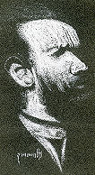

|
Indeks: |
Gedurende November 2011 het die hele land vir meer as 'n maand lank gegons oor die moord op mev Chanelle Henning op Dinsdag 8 November 2011. Bykans elke nuusbulletin op radio en TV, asook alle koerante het daagliks oor hierdie sluipmoord verslag gedoen.
Sy is deur twee mans op 'n motorfiets doodgeskiet nadat sy haar seuntjie, Benjamin (5) by die kleuterskool in Faerie Glen, Pretoria afgelaai het. Twee mans op 'n motorfiets het verby haar gery en drie skote aan die bestuurderskant van haar motor afgevuur. Een van die skote het haar noodlottig getref. Omstanders het haar uit die motor gehelp en probeer om haar lewe te red, maar sy is op die toneel dood. Die motorfietsryers het weggejaag.
Binne 'n paar dae is die twee motorfietsryers in hegtenis geneem, nadat die persoon wat die skietwerk gedoen het, homself oorgegee het. Hy is 'n polisiebeampte, wat op daardie stadium geskors was weens dwelmmisbruik en ander oortredings. Hy is skynbaar afgepers om die sluipmoord uit te voer.
Kort hierna is nog drie persone in hegtenis geneem - onder andere 'n Nigeriër wat die opdragte aan die twee motorfietsryers gegee het en André Gouws (47) 'n goeie vriend van die vervreemde eggenoot van mev Henning.
Sy is in 2006 getroud met a3.b5.c2.d4.e2.f3. Nico Henning *11-11-1966. Nico Henning is ook deur die polisie ingeneem vir ondervraging, maar is vrygelaat omdat hy tans nie 'n verdagte is nie. Hy is 'n besigheidsman. Hy was vir 'n paar jaar 'n Staatsaanklaer en is skynbaar 'n gekwalifiseerde advokaat.
Hulle was, na berig word besig om te skei en oor die voorafgaande drie en 'n half jaar in 'n bittere stryd om toesig oor hul vyfjarige seuntjie gewikkel. Dit was Nico se tweede huwelik.
Nico Henning is dus nie lid van die Peter Henrich Henning stam nie, maar lid van die Johan Wilhelm stam - Hoofstuk 12 van die Henning Familiekroniek. Sy ouers is wyle Dr Cornelius Almero Oosthuizen Henning en Anita Margaretha (gebore van Tonder). Wat tragies is, is dat Nico se pa, Dr Almero Henning self gedurende 1994 op sy plaas in die Gamtoosvallei deur een van sy plaaswerkers, bygestaan deur drie ander booswigte vermoor is. Almero Henning was onder andere Professor in Materiaal Wetenskap aan die Universiteit van Port Elizabeth en was ook verbonde aan die Atoom Energie Korporasie.
Chanelle Henning was die dogter van Ivan Saincic *21-2-1962 en Sharon Jean Schoeman *20-3-1968 van Pecanwood Landgoed, Hartebeespoort.


In die vorige nuusbrief het ons 'n skets gepubliseer van 'n mansgesig wat deur 'n L Henning gemaak is. Ons wou weet of iemand dalk die persoon op die skets herken en/of dalk weet wie die kunstenaar is.
'n Vriendin van b7.c8.d8.e3.f1. Mev Leonie Steyn (gebore Henning) van Brakpan - Rhea Jansen van Rensburg - het onlangs by haar gekuier. Sy sien toe die Nuusbrief daar lê en lees dit … en daar herken sy die persoon op die skets!
Dit is Ellis Pearson, 'n kunstenaar van Durban wat tans in sy vroeë 70's moet wees, as hy nog leef. Hy het onder andere in die Afrikaanse film "Papilon" saam met Marius Weyers en Sandra Prinsloo gespeel, waar hy die rol van die nar vertolk het. Ons weet nou nog nie wie die L Henning kunstenaar is nie. Leidrade kan dalk wees die feit dat Ellis Pearson dalk sy mentor was en dat hy in Durban woonagtig is/was.

Baie van ons lede sal met genoegdoening terugdink aan al die baie lekker familiefeeste wat ons sedert die stigting van die familiebond in 1984 gehou het.
Die eerste, grootste en mees suksesvolste van al ons feeste was sekerlik die fees wat ons oor die langnaweek van 8, 9 en 10 Oktober 1988 te Aliwal-Noord gehou het. Wie sal die openingseremonie vergeet toe ons met 'n perdekommando, pragtige koets met ses spierwit perde en 'n tradisionele ossewa verby die podium beweeg het, waar die burgemeester van Aliwal-Nood die saluut geneem het.
Daarna volg die inwyding van ons museum uitstalling oor die naweek van 4/5 April 1992 in Aliwal-Noord. April 1994 het ons 'n suksesvolle fees in Bloemfontein gehou en Oktober 2004 volg die eerste groot fees in Pretoria, toe ons by die Centurion Lapa bymekaar gekom het.
Klink 2014 nie na 'n goeie jaar om weer 'n landwye Henning fees aan te bied nie? Dit sal dertig jaar wees na die stigting van die Familiebond en tien jaar sedert die vorige groot fees.
Met die bestuurskomitee wat in die Wes-Kaap gesetel is, waar daar nie veel Hennings woon nie en 'n klomp "ou kroks" op die bestuurskomitee dien (nou gaan ek sekerlik slae kry), rig ons maar weer 'n uitdaging aan ons lede in die binneland om met planne vorendag te kom vir 'n volgende fees. Die meerderheid Henning's woon buitendien in Pretoria, met die Oos- en Wes-Rand in 'n sterk tweede plek, Bloemfontein in die derde plek en die res van die Vrystaat in die vierde plek.
b7.c2.d3.e4.f3.g2. Marthinus (MC) Henning van Welkom is eintlik die persoon wat hierdie sakie eerste aangeroer het. Hy skryf:
Ek sit nou die dag en wonder of daar 'n Henning byeenkoms beplan word vir 2014 of iewers in daardie omgewing, toe ek 'n gedagte kry rondom ietsie ekstra om dalk op so 'n byeenkoms te doen. Ek dink dit kan dalk interessant wees om 'n opname te maak van watter Hennings het watter tipe stokperdjies? Wie maak of bou dalk sekere dinge as 'n stokperdjie, of versamel sekere items, ens? Dan kan sulke persone dalk hulle stokperdjies kom uitstal en met ander uitruil of voortaan kommunikeer, of sommer net kom spog daarmee. Daar is ook sekere vaardighede wat besig is om uit te sterf onder ons Afrikaners, soos bv. om swepe te vleg. Dalk is daar in die bond lede wat sulke tradisionele vaardighede kan demonstreer op so 'n geleentheid.
Dit gebeur ook dikwels dat jy by iemand aan huis kom en hierdie interessante versameling van 'n bepaalde item sien en dan hoor dat die persoon sukkel om nog sulke items te bekom, of nie weet van andere wat ook so iets versamel of maak nie. Groot goed soos motors of trekkers sal nou nie werk nie, maar kleiner items kan dalk aftrek kry.
Ek het gedink, indien daar dalk so 'n versoek geplaas word in 'n volgende nuusbrief, dat Hennings moet laat weet wat hulle stokperdjies is, kan 'n mens dalk so 'n "stokperdjieklub" stig om interaksie tussen lede in die bond aan te wakker. Die resultate kan dan op 'n latere stadium gepubliseer word.
Ons sien dus met groot afwagting uit na al die manne (en vroue!) in die Vrystaat (of Gauteng!) wat bereid gaan wees om te help met die organisering van 'n Henning familiefees in 2014. U kan gerus kontak maak met Marthinus Henning. Sy telefoonnommer is 057 388 5269, sy E-Posadres: mchenning@goldfields-college.edu.za en sy posadres, Posbus 4788, Welkom, 9460 Intussen kan ons probeer om aan Marthinus se versoek te voldoen om 'n opname te maak van Hennings se stokperdjies. Marthinus is bereid om so 'n opname te koördineer. Laat weet dus vir Marthinus van u interessante stokperdjies, of u kontak wil maak met ander mense wat soortgelyke stokperdjies het en of u bereid sal wees om tydens 'n familiefees u stokperdjie te kom uitstal. U kan ook vir die Bondsekretaris laat weet, wat al die gegewens aan Marthinus sal deurgee.

b5.c1.d5.e6.f3.g2.h1. Johannes Jacobus Henning *9-7-1945, †2-7-2011 (Ook bekend as Hannes Henning of Hannesie).
Waar begin mens vertel van iemand met wie jy jou lewe vir 43 jaar gedeel het. Ek het Hannes in 1968 in Allanridge ontmoet en na 'n warrelwind romanse en dolverlief, is ons op 8 Junie 1968 getroud.
Vir twee jaar was dit net ek en hy en huis-opsit en toe in 1970 het die eerste klein Henningtjie sy verskyning gemaak en so het dit klokslag twee-jaarliks aangehou totdat al vier ons beplande kinders gebore is. Ons oudste, Francois is in 1970 gebore, Coenraad in 1972, Christelle in 1974 en die jongste, Hannes, in 1976.
Hannes self, is op 9 Julie 1945, in Bainsvlei in Bloemfontein gebore as een van 'n tweeling, en anders as donkerkop " kleinboet" Willie (wat 15 minute jonger as hy was), was Hannes die blondekop. Hulle was vier broers, waarvan die twee jonger boeties, Francois en Kobus, ook albei reeds oorlede is. Willie en sy vrou Sanet woon in Riebeeckstad, Welkom.
As kind het hulle, totdat hy ongeveer 12jr oud was, op Shannon buite Bloemfontein gebly totdat hulle na Allanridge (op die Goudvelde naby Welkom) getrek het. Hier het hy sy laerskool loopbaan voltooi en daarna is hy na Hoërskool Wessel Maree (Odendaalsrus) en die Hoër Tegniese Skool (Kroonstad), waar hy sy hoërskoolloopbaan voltooi het.
Hy het sy opleiding as Elektrisiën gedoen en altesaam 16 jaar op Lorraine Goudmyn (Allanridge) gewerk. Op die jong ouderdom van 26jaar is hy reeds aangestel as Voorman. Wat 'n prestasie! Hy was geweldig hardwerkend. Nie een dag lui of sommer net nie lus vir werk nie. Sy werk was sy trots.
Hy het later sy eie besigheid in Odendaalsrus begin waar hy ambagsmanne aan die goudmyne verhuur het. Nadat hy in 1984 die besigheid verloor het, het ons, ons in Rustenburg gaan vestig waar hy vir 23 jaar op Townlands Skag (Rustenburg Platinum Myn, gewerk het. Ook hier het hulle gou sy potensiaal raakgesien want slegs nadat hy vir 2 jaar as elektrisiën gewerk het, is hy as voorman aangestel. Die laaste 10jaar was hy 'n 'Maintenance Planner'.
Om Hannes te beskryf is nie moeilik nie maar dit gaan beslis nie reg laat geskied aan wie hy werklik was nie. 'n Mense- mens en groot vriend van so baie. Lief vir mense en sy familie. Net soos wat hy sy werk geniet het, so lekker kon hy kuier! Gasvry en joviaal. Hy was intelligent, skerp, 'n terggees, nuuskierig met 'n wye algemene kennis en 'n fyn sin vir humor. Kon ure lank staaltjies en stories vertel van onnutsighede uit sy kinderdae (mens kan jou indink dat 4 seuns in die huis seker 'n handvol was) en rugby wedstryde waaraan hy deelgeneem het, waar die ouens die drie onder hul eie pale gaan druk!
Sportmal! Daar was bitter min sportsoorte waarmee hy homself nie op hoogte gehou het met die jongste verwikkelinge nie, maar rugby was sy groot liefde. Hy het geglo hy is die beste kenner van die spel. Kon vir jou elke speler se goeie en swak punte uitwys en het ook geweet wie die beste afrigter was. Hy moes homself maar eintlik gaan aanmeld het vir 'n keurder! Rugby was vir hom so baie, baie belangrik.
Soos met almal van ons het hy ook maar sy 'swakker' punte gehad. Een daarvan was die 'werkies' in en om die huis! Dit het soms gelyk asof hy glo alles gaan sommer maar net vanself regkom! Maar wanneer hy ingeklim en begin regmaak het is dit perfek gedoen. Hy het die gewoonte gehad om so 'n entjie weg te staan om die saak te bekyk om miskien net nog iets te verskuif of te verander totdat hy tevrede was. Ek het altyd gesê as ons kinders kon werk soos hy, sal hulle groot sukses in die lewe behaal!
'n Regte plaatjie! Vele kere teen sy (en die ander spanlede) se beterwete, die skeids- of lynregter se oordeel bevraagteken, tydens pluimbalwedstryde.
Sy kinders was sy trots. Hy was maats met hulle, maar tog het hulle hom gerespekteer. Hulpvaardig, belangstellend en ondersteunend in wat ookal elkeen se behoefte was. Ek onthou hoe hy male sonder tal dankie gesê het vir sy kinders. Hy was baie, baie lief vir hulle ... en vir my ...
Op 31 Januarie 2008 tree hy af en 2 jaar later vestig ons, ons in Stilfontein. Ons kommerlose aftrede en rondreis- planne is kortgeknip. Vader het 'n ander plan gehad. Op 2 Julie 2011 sterf Hannes in die hospitaal in Klerksdorp aan maag- en slukdermkanker. Sy siekte het hom uitgemergel maar deur die Genade het hy geen pyn verduur nie, net 'n vreeslike ongemak.
Dit was so 'n groot voorreg om Hannes Henning as huweliksmaat en pa van my kinders te kon hê! Elize Henning, Stilfontein.

Ons het berig ontvang dat b5.c1.d5.e6.f3.g2.h4. Johannes Jacobus Henning en sy vrou Estelle Elsabe (gebore Nortje) van Rustenburg onlangs 'n nuwe kleinding ryker geword het. Sebastian is op 24-5-2011 te Rustenburg gebore.
Hannes werk by Xstrata en Estellie by Anglo American op Rustenburg.
Dan het twee Henning broers ook binne 'n paar maande na mekaar kleingoed ryker geword.
b5.c1.d5.e3.f1.g1.h2.i3. Conrad Henning *17-3-1983 en sy vroutjie, Barinda Sophia (gebore Opperman) *23-5-1983 se eersteling, Corné is op 8-12-2010 gebore, terwyl Conrad se oudste broer, Jan Andries Henning *19-3-1974 (i1) en sy vroutjie, Wilmari (gebore van Vuuren) *29-7-1981 se seuntjie Wian op 16-3-2011 gebore is.

Hier aan die begin van die jaar wil ons graag baie dankie sê vir almal wat reeds 'n donasie vir die instandhouding van die Familiebond aangestuur het. Daardeur verseker u dat die familiebond sal bly voortbestaan en selfs vooruitboer. Ons wil veral baie dankie sê aan diegene wat ruimskoots bygedra het. Ons vermeld graag die name van almal wat donasies van meer as R300,00 aangestuur het:
Mnr PP (Philip) Henning van Tweespruit - R1 000,00
Mnr JH (Jan) Henning van Sunninghill - R500,00
Ongelukkig het die meerderheid van ons lede nog nie hulle bydraes vir 2012 aangestuur nie.

Ons het onlangs die volgende baie interessante E-Pos brief uit Nederland van Pierre Schlappi ontvang:
"Mijn naam is Pierre Schlappi (26) en ik kom uit Tilburg in Nederland. Al jarenlang ben ik bezig met de geschiedenis van de Afrikaner en deze week kom ik erachter dat wij nog verre famillie in Zuid-Afrika hebben, mijn oma is ook een Henning. Nu vertelde een tante van mij dat zij nog regelmatig de familliepost uit Zuid-Afrika kreeg en heeft die deze week naar mij gestuurd zo kom ik bij uw epos adres. Al jaren vertel ik mijn ouders dat ik naar Zuid-Afrika wil emigreren en verzamel ik boeken over de geschiedenis van het boerevolk, zo heb ik laatst een Volkssangbundel uit de jaren 40 en een amptelijke gids van het voortrekkersmonument uit 1972 gekocht. Ik luister veel Afrikaanse muziek (radio pretoria) en ben lid van Boerevryheid forum op internet dus mijn Afrikaans wordt ook langzaam beter. Ik zou graag contact met u en misschien met andere Hennings onderhouden om wat meer over onze famillie in Afrika te leren, de famillie post was erg interessant en ik zag u ook met dr. Pieter Mulder op de foto staan. (Hier verwys Pierre na die Ons Haantjie van November 2011 en die foto van Bondsekretaris, Olivier Henning saam met Dr Pieter Mulder by die Algemene Jaarvergadering van die Erfenisstigting).
Na Pierre se tweede brief (hier onder) kon ons vasstel dat sy ouma, Cornelia Elizabeth Hendrika Henning was, maar dat sy geen verbintenis met enige Suid-Afrikaanse Henning stam het nie. Sy skakel in alle opsigte in by 'n Nederlandse Henning stam. Een van Cornelia se dogters is getroud met Pieter Verbunt, 'n medewerker by die opstel van 'n geslagsregister van die Nederlandse Hennings (wat ook op ons Henning webwerf op Internet vertoon word. Hy ontvang gereeld die Haantjie en dit is by Pieter se vrou wat Pierre die Nuusbrief te siene gekry en gevolglik gedink het dat hulle by die Suid-Afrikaaanse Hennings inpas.
Sorry voor de late reactie, net na onze eerste conversatie heb ik mijn laptop kapot laten vallen en heb ik een tijdje zonder computer gezeten. Ik heb momenteel niet het geld om een nieuwe te kopen en heb nu sinds vorige week een oude computer van een vriend van mij. Bedankt voor de aardige brief, ik wil zeker een keer op bezoek komen. Mijn oma's volledige naam is Cornelia Elisabeth Hendrika Henning geboren op 3 december 1920, ik zal er een stamboom die ik van mijn oom heb gehad bijvoegen alsmede een oude foto van ouma. Pff ik weet niet echt waar ik moet beginnen, ik wil u zoveel vertellen en zoveel vragen en ik ben zo blij dat ik eindelijk vrienden in Suid-Afrika maak. Hopleijk kunnen we ooit mooie gesprekken hebben over onze interesses en de geschiedenis van de Afrikaners als ik in de Kaap ben. ik kreeg een tijdje terug nog de Volkssangbundel uit eind jaren veertig thuis die ik op internet had gevonden en ook een fotobiografie van Hendrik Verwoerd. Nu kan ik al mijn favoriete liedjes in het Afrikaans onder de douche zingen haha, mijn huisgenoten beginnen de melodietjes van Sarie Marais en De la rey ook al te fluiten omdat ze mij zo vaak horen zingen onder de douche in de ochtend voor ik naar mijn werk ga. Ik wilde deze mail eigenlijk in het Afrikaans proberen te schrijven maar het schrijven gaat me nog minder goed af dan het spreken. Ik luister nu zoveel Afrikaner muziek en oude speeches van politici dat ik al bijna vloeiend Afrikaans spreek denk ik. Volgende week zit ik de hele week bij mijn ouders met kerst en oud en nieuw, ik zal dan wat meer foto's van ons gezin sturen en ook een langere mail. Maar nu alvast een Fijne Kerst en een Gelukkig nieuwjaar.

Verskeie Amerikaanse Hennings doen van tyd tot tyd navraag of ons enige gegewens ten opsigte van hulle families het of kan kry. In al die gevalle beskik die mense nie oor voldoende gegewens om enigsins behulpsaam te kan wees nie. Ons het nou 'n brief van 'n Randy Henning van Norman, Oklahoma ontvang. Wat sy versoek anders maak, is die feit dat sy voorsate skynbaar van dieselfde streek in Duitsland - Westphalia - kom, as waar ons stamvader vandaan kom. Ongelukkig het ons stamvader reeds in die vroeë 18 de eeu na die Kaap van Goeie Hoop emigreer, terwyl Randy se voorsate eers teen die middel van die 19 de eeu na Amerika verhuis het. Die opkoppeling is dus nog problematies. Dit is egter interessant om sy brief te lees:
Good to hear from you and make contact. I have spent some time on your web site and a number of additional reference sites. I am quite a History Buff and have been fascinated with our Henning History, and will appreciate your keen insight from your perspective and vantage point. As previously indicated, I am a Henning hailing from Norman, Oklahoma, USA.
Let me begin by sharing with you what I do know and have confirmed. I will confine my remarks to a direct genealogical chain from myself as a starting point of going backwards, but that will not be all inclusive, just the most direct examination and approach at this point. And to this end, I have two brothers.
Our Father is James Howard Henning, also from and born in Norman, Oklahoma, USA. Dad has two Brothers, one deceased, and one Sister, also hailing from the area.
Dad's Father and my Grand-Father, William Alexander Henning was born in McKinney, Texas (much to our chagrin; I'll have to explain this to you later). William Alexander Henning was born to Francis (Frank) Henning and Emily (Hollman) Henning. It is my understanding that Grand-Father Frank was born in Germany, Westphalia area I am advised, up around the Rhine (Rhyn) area. Frank Henning was born @ 1841. I am still gathering information in this regard. He was a Farmer and served in the American (USA) Civil War with the Union Cause. My understanding is he mustered in @ Illinois, USA area. Not sure or not if this was anywhere near the port of entry he entered the USA in or not. I am also gathering additional information in this regard. His Wife Emily (Hollman) was from around the Missouri, USA area. In addition to Grand-Father, Frank, who was the oldest sibling, there were six (6) other children as well; four boys and two girls. There were also a boy and two additional twin brothers who perished in childbirth or as infants. The name of the first was James, same as my Dad. It is my understanding at this point that all of these children above referenced were born in the USA, some Missouri, Oklahoma and Texas. I am gathering documentation on this as well, but am reasonably sure of this.
I have located some references that an Anton Henning, born "on the Atlantic Ocean" on or about 10/08/1854 to Charlie and Teresa (Vogt) Henning, natives of Germany who came to the USA in 1854. Research indicates that Charlie and Teresa Henning settled in and around Effingham City, Douglas Township, Illinois about 1854. Charlie was a "miller, and later a butcher in the Effingham area. He had also worked for the Vadalia Railroad. I do not have sufficient information to make a definitive connection between Anton and Frank, but appears there may possibly be a connection that they may possibly be brothers. I am simply not comfortable making that assertion at this point. This is one of those thing I do not know. Any insight you may have is welcomed and warmly appreciated. I am working on photos of Grand-Father Francis and Grand-Mother Emily. My Dad tells me that he is told he saw Grand-Father Frank once as a little child. He seems to have some recollection of Grand-Mother Emily though.

Ons ontvang gereeld pos, wat ons aan ons lede stuur, terug omdat die betrokke posbus opgesê is, of die Henning familie verhuis het. Ons wil weer 'n beroep op al ons lede doen om nie te vergeet om ons ook van u nuwe adres te laat weet, wanneer u verhuis. Ons wil baie graag met u in verbinding bly.

Daar is nou nog 'n Pieter Henning (b6.c1.d3.e5.f3.g4.h6) wat 'n boek geskryf het. Hierdie een is ook bekend as Piet. Hy woon in die Strand en dien op die Henning Familiebond se bestuur.
Anders as sy oupa (b6.c1.d3.e5.f3) wat oor die Boere in Argentinië geskryf het, handel Piet se boek oor bestuur en is dit in die rooi taal, want die mark is groter en meer mense kan dit lees en hopelik koop. Die boek word op internet op sy eie webwerf www.ManagementOne.biz verkoop, sowel as Amazon wat dit sal verkoop sodra die proef goedgekeur is.
Op die vraag waarom mens 'n boek skryf as die onderwerk al goed beskryf is, sê Piet dat daar min boeke, of liewer niks, is wat die onderwerp van die hoek af verduidelik soos hy dit doen nie. Ja, ja, almal sê so, maar hy is passievol oor die saak en verduidelik dit so:
Hy soek self al boeke oor die onderwerp vandat hy jonk was en gesukkel het met bestuur. Die boeke op die rakke is geskryf om geld te maak eerder as om op te lei, vandaar die feit dat dit meestal geskryf is vir mense wat klaar eksperte in bestuur is. Die skrywers is meestal akademici wat nooit hulle hande vuil gemaak het op die fabriekvloer nie. Hierdie boek is geskryf vir middelvlak bestuurders, voormanne ("supervisors"), en so aan deur Piet wat van onder af moes sukkel en leer en baie keer gefaal het en net so baie keer daaruit geleer het. Dit is vol praktiese raad en voorbeelde. Een van die gevalle studies is van sy oom, Maartin Henning. Ander is van sy Pa Hendrik en van sy seuns. Niemand is oorgesien nie. Die Hennings sorg hier self vir goeie voorbeelde.
Hy sê hy het werkers en kollegas om hom sien sukkel en het hulle nog altyd gehelp, veral die laaste 10 jaar waar hy self in middel tot senior bestuursposises was. Na die soveelste keer wat hy mense gehelp het met dieselfde goed, het hy besluit om dit op te skryf. Die opskrywery word toe so bietjie meer en word toe 'n boek. Die projek was in 2003 begin en is in Desember 2011 klaar gemaak toe die eerste boek gedruk is.
'n Tweede oogmerk met die boek is om opleiding te gee in die onderwerpe wat die boek dek. Hy en sy vrou Deidré werk tans hard aan die Werkboek wat sy boek gaan komplimenteer en wat hy sal gebruik as hy opleiding gee.
Op die webwerf www.ManagementOne.biz is meer inligting, een gratis hoofstuk en 'n gratis opleiding video. Gaan kyk gerus en ondersteun asseblief hierdie Henning.

b1.c3.d7.e9.f1.g2. Nicolaas Johannes (Nico) Henning *1-10-1942 (of soos hy sê, hy is een van die "goeie Nico's") het vir baie jare met groot onderskeiding op die bestuurskomitee van die Familiebond gedien. Na sy aftrede as wetenskaplike by die WNNR het Nico, as 'n stokperdjie, begin om vir homself 'n vliegtuig te bou. Weens baie probleme, het hy hierdie projek mettertyd laat vaar, maar toe 'n belangstelling begin ontwikkel in mikroligte vliegtuigies en om self so 'n ding te vlieg.
Nico word hierdie jaar sewentig jaar oud en het pas sy vlieënierslisensie verwerf - sekerlik 'n prestasie wat baie min sewentigjariges hom kan nadoen. Gaan lees gerus op die webwerf van die Mikroligte Vliegtuig Vereniging wat hulle van Nico se prestasie dink.
http://microlighters.co.za/viewtopic.php?f=1&t=17434&sid=86314b9be00ca4a0163ca3fce1852e04

Ons het verneem dat b7.c2.d3.e5.f2.g4.h1.Esme Marelien Henning *16-11-1975, getroud Spicer (D/v Gideon Petrus Henning en sy vrou Kathrina Amelia (gebore Meyer)'n Doktorsgraad (PhD Geologie) aan die Universiteit van Stellenbosch verwerf het. Hierdie graad sal gedurende Maart 2012 aan haar toegeken word omdat sy en haar man onlangs na Richardsbaai verhuis het. Esme het ook reeds in 1997 'n BSc graad, in 1998 'n Honneurs BSc (Geologie) en in 2001 'n MSc Geologie aan die Universiteit van Stellenbosch verwerf.
Sy sê dat die Doktorsgraad redelik lank gevat het om te kry omdat sy voltyds gewerk het, in 2000 getroud is en in 2009 'n baba gekry het. Nou dat haar studies voltooi is, kan sy darem nou 'n bietjie ontspan en 'n boek lees sonder om te probeer onthou wat sy gelees het - die titel: "Low Pressure Partial Melting of Metapelites at Mt Stafford, Central Australia".
Esme werk as 'n Ontwikkelings Chemikus by Richards Bay Minerals, Richardsbaai. Sy ontwikkel analitiese tegnieke vir mynbeplanning.
Daar het slegs een ander Henning het aan die einde van 2011 graad gevang by die Universiteit van Stellenbosch - Hermanus Lambertus Henning. Hy het 'n M Sc graad in Ingenieurswese verwerf. Ongelukkig het ons nie Hermanus op rekord nie en sal dit waardeer as iemand wat hom ken, ons kan laat weet waar hy in die Henning prentjie inpas.

Aan die einde van 2011 het 43 Henning jongmense die matriekeksamen suksesvol afgelê. Ons het ook verneem van een dogter van 'n nooi Henning, wat nou 'n ander getroude van het, wat ook die eksamen suksesvol afgelê het. Dit vergelyk goed met die 37 Henninkies wat aan die einde van 2010 die eksamen landwyd afgelê het. Van hierdie 44 (43 plus 1) is daar 27 wat universiteits-vrystelling gekry het en 14 wat vir diplomastudies kwalifiseer. 22 was manlik en 21 plus 1 vroulik. 24 was van Gauteng, vyf elk in die Vrystaat en Wes-Kaap, drie in Limpopo, twee elk in Noord-Wes, Mpumalanga en Noord-Kaap en een in Natal.
Die beste presteerders was ongetwyfeld die volgende vier meisies:
1. b7.c2.d3.e4.f3.g2.h1. Anina Henning *22-10-1993, D/v Marthinus Christoffel Henning en sy vrou Henesia Erika (gebore Kleynhans). Sy het sewe onderskeidings verwerf in die volgende vakke: Afrikaans Huistaal, Engels Eerste Addisionele Taal, Wiskunde, Rekeningkunde, Fisiese Wetenskappe (Skei-Nat), Lewenswetenskappe (Biologie), Lewensoriëntering.
2. b6.c4.d1.e5.f5.g7.h2.i3. Marike Henning *5-2-1993, D/v Jan Sarel Marthinus Henning en sy vrou Maria Margaretha (gebore van Zyl). Sy het ses onderskeidings verwerf: Afrikaans Huistaal, Engels Eerste Addisionele Taal, Wiskundige Geletterdheid, Lewensoriëntering, Verbruikerstudies en Visuele Kunste.
3. Alida-Louise Henning. Ongelukkig weet ons nie waar sy in die Henning geslagsregister inpas nie. Sy het ses onderskeidings (Afrikaans Huistaal, Engels Eerste Addisionele Taal, Lewensoriëntering, Ingenieursgrafika en Ontwerp, Geografie en Visuele Kunste).
4. Runé van Straaten *14-11-1993, D/v Simon Sauer van Straaten en sy vrou b7.c8.d8.e5.f5. Rubina Theunissa (Runa) (gebore Henning) het vyf onderskeidings behaal in die volgende vakke: Afrikaans Huistaal, Engels Eerste Addisionele Taal, RekenaarToepassingstegnologie, Gasvryheidstudies en Lewensoriëntering.
Marthinus Henning van Welkom laat weet dat hulle baie dankbaar is vir die talente wat Anina (b7.c2.d3.e4.f3.g2.h1) ontvang het. Dít, tesame met haar harde werk, nie net deur haar matriekjaar nie, maar regdeur haar skoolloopbaan, het dit vir haar moontlik gemaak om sewe onderskeidings te kon behaal.
Dit was nie altyd maklik nie, aangesien sy 'n hele paar keer gedurende haar skoolloopbaan in 'n hospitaal teater 'n draai moes gaan maak en dan 2 of 3 weke daarna uit die skool was. Sy moes dan ekstra insit om weer in te haal en by te kom. So was sy sedert haar kleuterskooldae gedeeltelik doof in die een oor aangesien sy feitlik geen oordrom meer gehad het nie. Dít het meegebring dat sy woorde verkeerd gehoor het en dus woorde gespel het soos sy dit gehoor het. Haar spelling was soms skrikwekkend, maar gelukkig het sy, toe sy 10 jaar oud was, 'n baie suksesvolle oordrom rekonstruksie gehad wat haar gehoor honderd persent herstel het. Die spelling het egter heelwat langer geneem om reg te kom.
Verder het hulle besluit om haar na graad 11 van skool te laat verander en sy het haar matriekjaar by Goudveld Hoërskool in Welkom begin. Hierdie was nie 'n ligte besluit om te neem nie en hulle was deeglik bewus van die moontlike nadele wat dit vir haar kon inhou. Die nadele om haar in haar ou skool te hou, was egter heelwat groter as die moontlike nadele om haar te skuif. Des nieteenstaande heelwat doemprofete se voorspellings dat hulle 'n groot fout maak, het sy die teendeel bewys, nl. dat dit nie regtig 'n risiko is om in jou matriekjaar van skool te verander nie, mits jy hard werk. In Goudveld Hoërskool is sy ook geleenthede gegun wat sy nie in haar vorige skool gehad het nie en dit het haar as mens net beter ontwikkel. Hiervoor is hulle oneindig dankbaar vir die hoof en alle onderwysers/onderwyseresse wat haar ten volle ondersteun en bygestaan het en dikwels bereid was om die ekstra myl, nie net met haar nie, maar met elke ander leerling te stap.
Anina het besluit om in 2012 eers, wat sy 'n "gapjaar" noem, te neem. Sy beplan om au pair werk iewers in Suid-Afrika te doen en is nog op soek na 'n Christelike gesin waar sy kan inwoon en na hulle kind(ers) omsien. Sy geniet dit verskriklik om met kinders te werk. Sy het haar noodhulp tot op vlak drie, asook sport noodhulp, voltooi en het dikwels tydens sportbyeenkomste diens gedoen.
Sy beplan dan om in 2013 met haar studies in 'n mediese rigting te begin en Marthinus hulle hoop dat sy keuring sal ontvang om daarmee te kan voortgaan. Hulle sal ook poog om in hierdie jaar vir haar studiebeurse te bekom en hoop dat haar goeie uitslae in hierdie opsig sal help en as bewys dien dat sy 'n harde werker is en haar studies ernstig sal opneem.